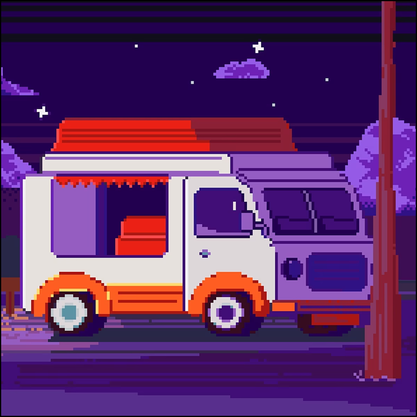

Фритрек и нулевой спринт: Подготовка к работе
</HTML>
Это было самое начало пути. На этом этапе важно было проникнуться основами и настроиться на учёбу. И, возможно, подумать, как новые знания могут повлиять на ваше будущее.
Было ничего не понятно. Какой HTML? Из CSS, знал только CS:GO. Потом через время, я начинал понимать.